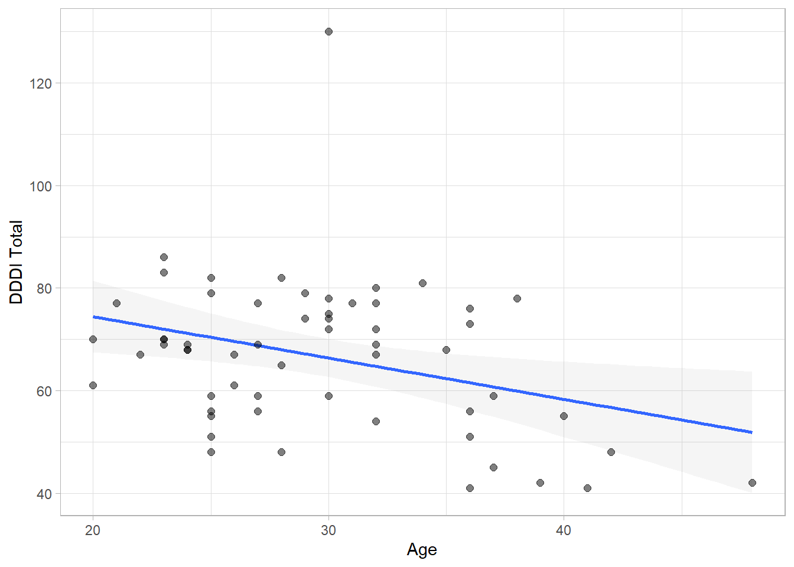
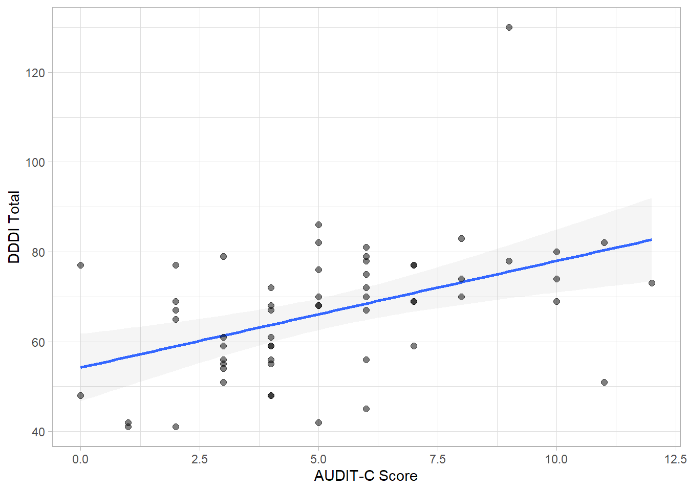

6 Bivariate Distributions
6.1 Age
## # A tibble: 1 x 1
## PearsonR
## <dbl>
## 1 -0.332
6.2 Sex
## # A tibble: 2 x 4
## sex Mean SD Median
## <fct> <dbl> <dbl> <dbl>
## 1 Female 69.0 8.71 68
## 2 Male 65.4 17.2 69
6.3 Alcohol Use
## # A tibble: 1 x 1
## PearsonR
## <dbl>
## 1 0.489
6.4 SDS
## # A tibble: 1 x 1
## PearsonR
## <dbl>
## 1 0.490
6.5 STAXI-T
## # A tibble: 1 x 1
## PearsonR
## <dbl>
## 1 0.536
6.6 Correlation Matrix
## DDDI_Total age AUDIT_Total meth_SDS T_Ang_Total
## DDDI_Total " 1.00 " "" "" "" ""
## age "-0.22***" " 1.00 " "" "" ""
## AUDIT_Total " 0.44***" "-0.10 " " 1.00 " "" ""
## meth_SDS " 0.49***" "-0.39** " " 0.32* " " 1.00 " ""
## T_Ang_Total " 0.65***" "-0.09 " " 0.37***" " 0.19 " " 1.00 "